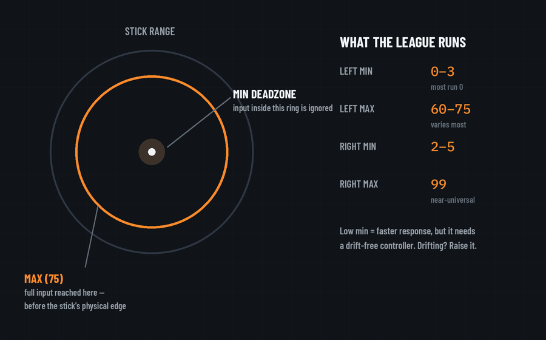

Deadzones are the least understood setting on any pro's sheet, and the one where copying blindly can actively hurt you. Here's how they work and how to read the league's numbers.

The min value sets how far the stick must physically move before the game registers anything. Inside that ring, input is ignored. Every point of minimum is latency you added on purpose — so pros push it as low as their hardware allows. Our tracking shows most of the league sits at 1 on the left stick, with ten players at a true 0, and lands on 3 for the right stick almost universally: 35 of the 45 confirmed profiles. The catch: a min of 0 on a controller with any wear means stick drift — your character creeps, your aim ghosts. The rule is simple: run the lowest value that gives you zero drift, and accept that on an older pad that number is higher than what the pros run on fresh customs. Note that the two sticks get treated differently. The left one is movement, so a player can afford to bottom it out. The right one is aim, which is why it holds at 3 across almost the whole league even on players who take the left stick to 0. A couple go below that on purpose. Dropping the aim stick to 1 buys the finest control the game will give you, and the players who do it have decided a little drift is a price worth paying for it.
The max sets where the game reads "stick fully pushed." At 75, you hit full sprint or full turn speed at 75% of the stick's physical travel. The last quarter does nothing extra, which effectively makes the stick respond faster without touching sensitivity. That matters more in Black Ops 7 than the number suggests. Movement decides a large share of fights in this game, and reaching top speed a fraction earlier out of every strafe, slide and corner is worth more than the precision you give up at the top of the stick. It is the one deadzone value pros deliberately pull down: 36 of the 45 tracked players sit at 75, and four go lower still. Right-stick max is 99 almost universally, but left-stick max is where players personalize: our data has starters anywhere from 60 to 75. Lower max = full movement input arrives sooner = snappier strafes.
When a player page shows L 0/70 · R 3/99, that's: left stick registers instantly and maxes at 70% travel; right stick has a hair of buffer and uses nearly full travel. Compare a few pages and you'll see deadzones vary more than any other setting — because they're tuned to a specific controller in a specific condition, not to a feel preference. That's also why they're the one setting you should tune to your hardware rather than copy. Full per-player values are on every tracked page, and the deadzone data article covers what the league-wide pass found.